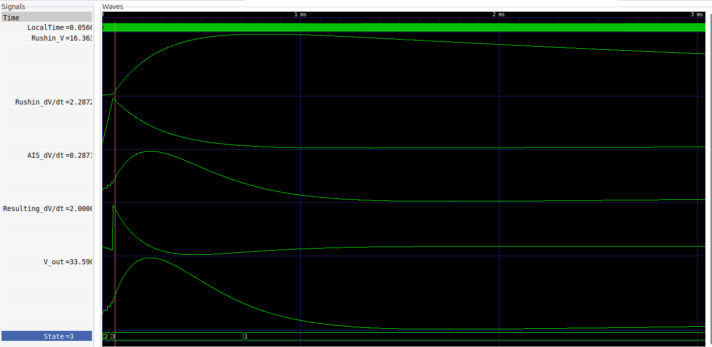

Figure 7.1: The summary of
AP generation as seen on the screen of the electronic simulator.
The voltage time derivatives (the midle subfigure), resulting by summing the , and a constant corresponding to the clamping current, that define the membrane’s output voltage (the
AP,
the bottom subfigure), that control synaptic contributions (top subfigure). See also 3.8